의공산업기사 (2015-09-19 기출문제)
1과목: 기초의학 및 의공학
1. 손, 발톱을 구성하는 단단한 단백질 성분은?
- sebum
- lunula
- keratin
- cuticle
(정답률: 88%)

2. 체내 삽입형 센서가 가져야 하는 특성과 거리가 먼 것은?
- 소형화
- 안정성
- 전기적 절연
- 고전압 구동
(정답률: 93%)
3. 다음 중 생체신호 측정용 전극에 대한 설명으로 옳지 않은 것은?
- 생체 내부에서는 이온에 의한 전류가 생성되고, 계측 시스템 내에서는 자유전자의 이동에 의한 전류가 만들어 진다.
- 생체표면에 금속 성분의 전극이 부착되면, 이온 작용에 의한 일정한 전위를 얻게 되는데, 이때 얻어지는 전위값은 온도, 습도에 의하여 영향을 받게 된다.
- 금속전극과 전해질 경계면(interface)에서는 전하 분리현상에 의한 전기 이중층(electric double layer)이 형성되나, 곧 사라져 전기적 중성 상태가 된다.
- 생체 내 이온에 의한 전류를 전자회로 내의 자유전자에 의한 전류로 변환해 주는 변환기(transducer)의 역할을 한다.
(정답률: 69%)
4. 신경의 흥분을 유발하기 위한 자극의 유효성 조건이 아닌 것은?
- 자극의 강도
- 자극의 속도
- 자극되는 기간
- 자극의 반복횟수
(정답률: 70%)
5. 심장 전도계에서 전기 자극의 전달 순서로 옳은 것은?
- 방실결절 → His 번들 → 퍼킨제 섬유 → 동방결절
- His 번들 → 퍼킨제 섬유 → 동방결절 → 방실결절
- 퍼킨제 섬유 → 동방결절 → 방실결절 → His 번들
- 동방결절 → 방실결절 → His 번들 → 퍼킨제 섬유
(정답률: 95%)
6. 압전센서의 활용 용도가 아닌 것은?
- 심음측정
- 혈압측정
- 혈류측정
- 체온측정
(정답률: 84%)
7. 휘스톤 브리지에 대한 설명 중 맞는 것은?
- 저항성 센서의 미세한 변화를 감지하기 위한 회로이다.
- 화학 센서 간의 전기적 전도를 위한 통로이다.
- 교류 전압을 직류 전압으로 변환하는 정류 회로이다.
- 아날로그 신호를 디지털 신호로 바꿔주는 장치이다.
(정답률: 78%)
8. 심장벽의 구성이 아닌 것은?
- 우심실
- 심근
- 심내막
- 심외막
(정답률: 93%)
9. 바늘형 전극에 대한 설명으로 틀린 것은?
- 안전을 위해 단극성 전극만 사용한다.
- 바늘 끝부분을 제외한 나머지 부분은 절연되어 있다.
- 외부 잡음을 막고 주파수 특성을 개선한 동축형 바늘 전극도 있다.
- 바늘전극의 대표적 용도는 근전도 측정이다.
(정답률: 82%)
10. 다음 중 빛을 이용한 센서의 장점에 해당하는 것은?
- 크기가 작아서 하나의 카테터에 여러 개의 센서를 장착할 수 있다.
- 주변의 빛에 예민하여 잡음이 발생할 수 있다.
- 안정화되는 데 시간이 많이 걸린다.
- 동적신호를 처리하는 데 제한이 있다.
(정답률: 93%)
11. 다음 중 피부 표면에 부착하는 전극은?
- 일회용 금속판 전극(disposable electrode)
- 이식형 전극(implantable electrode)
- 바늘형 전극(needle electrode)
- 미세 전극(micro electrode)
(정답률: 97%)
12. 일회용 금속판 전극의 사용방법으로 옳지 않은 것은?
- 전극 부착면을 깨끗이 한다.
- 전해질이 모두 마른 후에 전극을 붙인다.
- 전극과 피부간의 움직임이 없도록 부착한다.
- 전극의 전해질 보호 필름을 제거하고 부착한다.
(정답률: 97%)
13. 심장의 전기적활동을 기록하기 위한 심전도의 측정방법에 대한 설명이다. 다음과 같은 유도법을 무엇이라고 하는가?
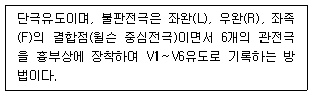
- 단극유도(Unipolar lead; Goldberger)
- 쌍극유도(Bipolar lead)
- 흉부유도(Precordial lead)
- Wilson 중심전극(Wilson centeral terminal)
(정답률: 82%)
14. 유도성 센서 중 가장 대표적으로 사용되는 것은?
- 선형 가변 차동 변환기(LVDT)
- 금속 저항 온도계
- 열전쌍
- 초음파 센서
(정답률: 92%)
15. [그림]은 폐용적과 폐용량을 나타낸 그래프이다. [그림] 중 C가 가리키는 것은?
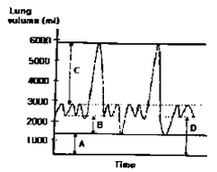
- 호기예비량(expiratory reserve volume)
- 잔기량(residual volume)
- 흡기예비량 (inspiratory reserve volume)
- 기능적 잔기용량(functional residual capacity)
(정답률: 77%)
16. 다음 접미사 중 세포를 뜻하는 것은?
- -cyte
- -ist
- -ole
- -ia
(정답률: 89%)
17. 흡입하는 산소의 농도를 표시하는 흡입산소분율을 의미하는 것은?
- PT
- pH
- FiO2
- WBC
(정답률: 87%)
18. 다음 중 뒤뇌(후뇌)에 속하지 않은 구조물은?
- 소뇌(cerebellum)
- 다리뇌(pons)
- 시상하부(hypothalamus)
- 벌레(vermis)
(정답률: 77%)
19. 뇌신경은 뇌저에서 나와 12쌍으로 구성되어 있다. 뇌신경계에 해당하지 않는 것은?
- 후신경
- 액와신경
- 미주신경
- 청신경
(정답률: 71%)
20. 일차뼈 되기 중심과 이차뼈 되기 중신에 있는 연골로서 뼈의 길이 성장이 일어나는 것은?
- 치밀뼈(compact bone)
- 뼈끝판(epiphyseal plate)
- 해면뼈(sponge bone)
- 관절연골(articular cartilage)
(정답률: 85%)
2과목: 의용전자공학
21. 다음 중 불 함수의 대수식으로 틀린 것은?
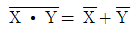
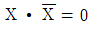
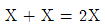
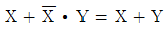
(정답률: 86%)
22. 아날로그 신호에 대해 바르게 설명한 예는?
- 전류와 시간에 의존하여 이산적으로 변화하는 물리량
- 전압과 시간에 의존하여 이산적으로 변화하는 물리량
- 전압과 전류가 시간에 의존하여 연속적으로 변화하는 물리량
- 음성과 같은 이산적인 변이형태를 지닌 생체신호
(정답률: 83%)
23. 60Hz 30V의 정현파를 전파브리지 정류기에 공급하였다. 출력주파수와 전압은 얼마인가?
- 60Hz, 28.6V
- 120Hz, 30.7V
- 60Hz, 30.7V
- 120Hz, 28.6V
(정답률: 55%)
24. TTL 회로의 구성에 대한 설명으로 옳은 것은?
- transistor와 transistor를 혼용한 회로이다.
- DTL 회로의 gate diode 대신에 몇 개의 emitter를 가지는 Multi-emitter transistor로 구성되어 있다.
- trasistor와 transistor를 제거한 회로이다.
- RTL과 DTL을 총칭하여 TTL이라 한다.
(정답률: 73%)
25. R-C 직렬 회로의 충전과 방전에 관한 설명으로 틀린 것은?
- 직류전압 E를 인가하면 흐르는 전류는
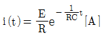
이다. - 직류전압 E를 인가한 경우의 시정수 t는
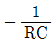
이다. - 방전 전류의 방향은 충전과 반대이다.
- 직류전압 E를 제거한 경우의 시정수 t는 RC이다.
(정답률: 74%)
26. 심장의 심실이완기 초기에 나는 심음으로 반월판막이 닫힐 때 나는 심음은?
- 제 1 심음
- 제 2 심음
- 제 3 심음
- 제 4 심음
(정답률: 89%)
27. 두 종류의 금속을 접속시켜서 폐회로를 형성하고, 그 두 개의 접점부에 온도차가 발생하면 기전력을 발생시키는 현상은?
- 톰슨 효과
- 펠티어 효과
- 볼타 효과
- 제벡 효과
(정답률: 88%)
28. NPN 트랜지스터의 전류이득이 200 이고, 컬렉터 전류가 100mA 일 때, 베이스 전류는?
- 0.1mA
- 0.2mA
- 0.5mA
- 1mA
(정답률: 74%)
29. 다음 중 압전효과가 나타나는 소자를 이용하여 만든 발전회로는?
- LC 발전기
- RC 발전기
- 수정 발전기
- 음차 발전기
(정답률: 70%)
30. 기체노동의 측정 중 mass spectroscopy에 대한 설명으로 틀린 것은?
- 이온 전류를 측정하여 농도 계산
- 적외선이 기체에 의해 흡수되는 정도를 측정하여 농도 계산
- 기체 분자별로 일정거리를 비행하므로 거리에 따라 기체 분자를 분리
- sample gas를 추출하여 고전압으로 이온화 시킨 후 진공용기 내로 살포
(정답률: 63%)
31. 저항 3Ω에 흐르는 전류가 0.5A이면 적합한 저항의 전력규격은?
- 0.125W
- 0.25W
- 0.5W
- 1W
(정답률: 55%)
32. 다음 생체신호의 종류 중 미약한 전류들 인체의 피부 또는 조직에 주입하여, 조직 임피던스와 전류에 의해 만들어진 전압강하를 측정하는 신호는 어느 것인가?
- 생체전기신호
- 생체임피던스신호
- 생체자기신호
- 생화학신호
(정답률: 88%)
33. 다음 회로에서 전원전압은 10V, 저항 R1=250Ω, R2=250Ω, R3=500Ω 일 때, 전체에 흐르는 전류의 크기는?
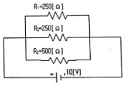
- 0.1A
- 0.2A
- 0.5A
- 1A
(정답률: 59%)
34. 변압기의 권선비가 N1/N2=2이고, 1차권선측(N1측) 전압이 120V이면, 2차권선측 전압은?
- 0V
- 60V
- 120V
- 240V
(정답률: 76%)
35. 다음 그림과 같은 회로의 기능은?
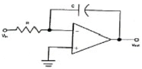
- integrator
- adder
- comparator
- differentiator
(정답률: 80%)
36. 두 신호의 차를 증폭하는 것으로 입력에 두 위상의 전압 V1, V2를 가했을 때 출력전압의 크기가 V1, V2차에 비례하는 회로는?
- 차동증폭회로
- 연산증폭회로
- 전력증폭회로
- 반전증폭회로
(정답률: 86%)
37. 프로그래밍언어 중 컴퓨터가 직접 이해할 수 있는 것은?
- machine language
- C language
- assembly language
- compiler language
(정답률: 85%)
38. 심전도 파형에서 심방의 탈분극을 나타내는 파형은?
- P 파
- T 파
- QRS 군
- U 파
(정답률: 78%)
39. 심전도 신호를 기록하기 위한 심전도 표준 12유도법에 대한 설명 중 틀린 것은?
- 표준사지유도법은 왼팔, 오른팔, 왼발을 연결하여 측정한다.
- 증폭사지유도법은 쌍극유도 방식이다.
- 증폭사지유도법은 R파의 크기를 증폭하기 위한 방법이다.
- 흉부 V1 유도를 위한 전극 부착위치는 제 4늑간 흉골 우측가장자리이다.
(정답률: 66%)
40. 다음 논리 회로의 출력 Y는?
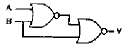
- Y=AB
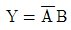
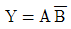
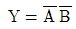
(정답률: 73%)
3과목: 의료안전ㆍ법규 및 정보
41. ( )안에 들어갈 말로 옳지 않은 것은?
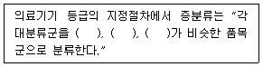
- 장치
- 제조공정
- 원자재
- 품질관리체계
(정답률: 66%)
42. 의료폐기물을 며칠 이내로 폐기물을 처리하여야 하는가?
- 당일
- 7일
- 30일
- 60일
(정답률: 73%)
43. PACS에 관한 설명으로 옳지 않은 것은?
- ANSI 규격에 따라 이미지 데이터를 저장, 관리하고 있으며 의료영상획득기기, 전단방사선과 등 각 임상 의사들을 하나로 연결하고 있다.
- 관계형 데이터베이스를 이용하여 의료영상을 저장하거나 요청에 따라 검색하여 전송해주는 일을 한다.
- PACS가 출현하게 된 배경을 살펴보면 디지털 영상기술의 발전이 있다.
- 실시간 판독, 자동화에 의한 진료능률 향상, 방사선과 진료의 지역 분산화를 가져온다.
(정답률: 56%)
44. 의료기기의 전원부에서 절연의 내부 또는 표면을 통해 보호접지선으로 흐르는 전류를 무엇이라고 하는가?
- 환자측정전류
- 외장누설전류
- 접지누설전류
- 고압전류
(정답률: 87%)
45. 수술부, 응급부, 일반병실, 기타 실의 벽면 또는 천정 등에 설치되어 용도에 맞는 의료가스를 사용할 수 있도록 만든 장치는?
- 차단 장치
- 지역경보 장치
- 단말구 장치
- 저장 장치
(정답률: 85%)
46. 점막에 접촉하고 접촉시간이 24시간 미만인 의료기기의 제품에 대하여 ISO 규격에서 지정한 생물학적 안전성 시험평가 항목이 아닌 것은?
- 세포독성시험
- 감작성시험
- 이식시험
- 자극성시험
(정답률: 82%)
47. 다음 환자관련정보 중 극비사항에 속하지 않는 것은?
- 예방접종
- 정신과 진료내용
- 성(性)에 관계된 내용
- 환자와 의사간의 대화내용
(정답률: 80%)
48. 전자의무기록에 대한 설명으로 옳지 않은 것은?
- 환자의 질병에 관계되는 모든 사항과 의료진이 시행한 검사와 처치내용 및 그 결과에 관한 모든 사항을 기록한 문서이다.
- 의무기록은 적시에 작성되어야 하고 환자상태를 입증하기에 충분한 자료이어야 한다.
- 국내 많은 병원에서 전자의무기록시스템을 운영하고 있으나 전자기록부의 내용은 종이로 출력 후 서명하여 보관하여야 한다.
- 정보화 기반을 통하여 진보된 미래지향적 의료서비스의 제공과 병원의 경영 및 보유 정보의 부가가치를 높여주는 병원정보화의 핵심부분이다.
(정답률: 90%)
49. 다음 설명의 ( )에 들어갈 용어가 아닌 것은?
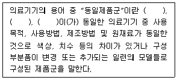
- 제조국
- 제품가격
- 제조사
- 품목명
(정답률: 89%)
50. 다음 중 누설전류의 종류가 아닌 것은?
- 접지누설전류
- 방사선누설전류
- 환자누설전류
- 외장누설전류
(정답률: 86%)
51. 휴대형 의료기기의 기계적 안전을 위한 낙하시험에서 기기의 중량별 낙하높이가 틀리게 짝지어진 것은?
- 8kg : 5cm
- 30kg : 4cm
- 40kg : 3cm
- 70kg : 2cm
(정답률: 75%)
52. 각 의료기관에서 개별적으로 추진해온 전자의무기록을 국가적으로 확장하여 평행동안(from cradle to grave) 개인의 진료와 건강관련 정보를 모두 지원하고 관리하는 시스템으로 미래의 이상적인 복지국가가 지향하는 국민건강관리 정보시스템을 무엇이라 하는가?
- AMR(Automated Medical Record)
- CMR(Computerized medical Record)
- EMR(Electronic Medical Record)
- EHR(Electronic Health Record)
(정답률: 88%)
53. 데이터베이스의 설계 단계를 올바른 순서로 나타낸 것은?
- 요구조건분석 → 개념적설계 → 논리적 설계 → 물리적 설계 → 구현
- 요구조건분석 → 개념적설계 → 물리적 설계 → 논리적 설계 → 구현
- 요구조건분석 → 논리적설계 → 개념적 설계 → 물리적 설계 → 구현
- 요구조건분석 → 논리적설계 → 물리적 설계 → 개념적 설계 → 구현
(정답률: 85%)
54. 과도한 전류가 생체에 흘렀을 때 나타나는 현상이 아닌 것은?
- 전류에 의해 세포내 이온의 이동이 발생한다.
- 전류가 흥분성 섬유(신경, 근육)에 전기적 자극을 가해 활동 전위를 유발시킬 수 있다.
- 활동 전위가 유발되어 기능을 잃은 세포가 원래의 기능을 회복한다.
- 피부저항에 의한 조직에서의 저항성 발열로 의한 화상이 발생할 수 있다.
(정답률: 88%)
55. 의료기기허가등에 관한 규정에서 다음 설명에 해당하는 용어는?
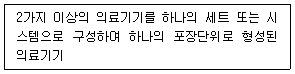
- 조합의료기기
- 시스템의료기기
- 단일의료기기
- 복합구성의료기기
(정답률: 76%)
56. 의료영상시스템(PACS)의 이용이 가능한 통신망이 아닌 것은?
- Ethernet
- FDDI
- ATM
- SNOMED
(정답률: 85%)
57. 일반적으로 의료기기의 용기나 외장에 기재하지 않아도 되는 것은?
- 제조업자 또는 수입업자의 상호와 주소
- 수입품의 경우는 제조원(제조국 및 제조사명)
- 제조번호와 제조연월일
- 사용방법 및 사용시 주의사항
(정답률: 80%)
58. SNOMED에 대한 설명으로 옳지 않은 것은?
- SNOMED Ⅱ는 7가지의 축을 갖는 코드다.
- SNOMED International은 11가지 축을 갖는 코드다.
- 병의 여러 가지 특성을 코드화할 수 있다.
- 3자리 코드를 근간으로 하고 있으며, 선택자리인 4번째 자리는 자세한 단계를 갖는다.
(정답률: 74%)
59. 환자에게 열을 주는 것을 의도하지 않은 기기 장착부의 표면온도는 몇 도를 초과하면 안되는가?
- 36℃
- 38℃
- 41℃
- 43℃
(정답률: 80%)
60. 의료기기의 등급 분류 중 잠재적 위해성이 거의 없는 의료기기에 해당하는 것은?
- 1등급
- 2등급
- 3등급
- 4등급
(정답률: 71%)
4과목: 의료기기
61. X-선 장치에서 콤프턴 산란으로 인해 영상의 해상도가 나빠지는 것을 막는 장치는?
- 그리드
- 반음영
- X-증감기
- 영상증배관
(정답률: 83%)
62. 다음 중 사이클로트론이 필요한 다층 촬영 장치는?
- SPECT
- MRI
- PET
- X-선 CT
(정답률: 67%)
63. 전기 수술기의 주요 작용이 아닌 것은?
- 절개
- 지혈
- 응고
- 소독
(정답률: 81%)
64. 인공심폐기의 구성이 아닌 것은?
- 저혈조(blood reservoir)
- 산화기(oxygenator)
- 흡착필터(adsorbent)
- 열교환기(heat exchanger)
(정답률: 59%)
65. 콘덴서 방전식 적류 세동제거기에서 출력파형의 세동제거 효율을 높이기 위해 지수함수적 방전 파형에서 가파른 펄스 방전 파형으로 변화 시키기 위해 회로에 삽입하는 것은 무엇인가?
- 고속방전 스위치(SW)
- 초크 코일(L)
- 경흉 저항(R)
- 바이패스 콘덴서(C)
(정답률: 60%)
66. 몸에 항상 휴대하면서 24시간 심전도를 측정하는 장치는?
- DR(Digital radiography)
- 환자감시장치
- 초음파스캐너
- 홀터 모니터
(정답률: 70%)
67. 환자가 강제적 호흡에서 자발적 호흡으로 완전히 바뀌었을 때 환자에게 사용하는 인공호흡기 모드는?
- P-CMV
- V-CMV
- P-SIMV
- SPONT
(정답률: 68%)
68. 초음파 영상 촬영 방식 중 A-mode로 측정한 결과 초음파 펄스를 인가한 후 반향파가 15μs 후에 돌아 왔다면 불연속면의 깊이는 얼마인가? (단, 초음파의 속도는 1540 m/s이다.)
- 11.55mm
- 10.01mm
- 6.50mm
- 23.10mm
(정답률: 50%)
69. 인공호흡기의 방식 중에서 자발적인 호흡을 하는 대상자의 기도에 호기말 양압이 가해지는 방식은?
- 계속적 인공호흡기
- 간헐적 강제환기
- 지속성 기도양압
- 동시성 간헐적 강제환기
(정답률: 65%)
70. 제세동기의 설명으로 적당하지 않은 것은?
- 모든 제세동기를 조작하기 위한 기본 순서는 전원을 켜고 전극을 붙인 다음 심장의 리듬을 분석한 뒤 제세동을 시행하는 것이다.
- 전극부착의 표준위치는 왼쪽 심첨부와 심장의 후면인 왼, 오른쪽 견갑하부에 부착하는 것이다.
- 심전두 분석 시 몸의 약한 움직임이라 할지라도 전기신호에 영향을 주어 오류가 생길 가능성이 있기 때문에 구급차 내에서도 차를 멈추고 심전도 분석을 해야 한다.
- 제세동을 시행 시 강한 전기 에너지에 때문에 환자가 접촉해 있거나 가까이 위치하지 않도록 한다.
(정답률: 57%)
71. 방사선 치료장치의 설명으로 틀린 것은?
- 방사선 치료는 종양의 위치에 따라 방사선을 선택하여 치료한다.
- 외조사치료장치, 근점조사치료장치, 정위적 방사선 수술장치로 구분된다.
- X선은 피부근처의 종양, 전자선은 심부의 종양치료 사용에 적합하다.
- 방사선은 정상조직과 암조직 모두에게 방사선으로 인한 장애를 일으킨다.
(정답률: 81%)
72. 전기 수술시 사용 중 유의사항으로 틀린 것은?
- 유독성 연기가 배출될 수 있어 연기를 빠르게 배출할 수 있는 시설이 되어 있어야 한다.
- 발생되는 고주파 신호는 수술실의 타 전자기기에 영향을 줄 수 있으므로 주의해야 한다.
- 대극판의 면적을 크게 하는 주된 이유는 짓눌림에 의한 피부 손상을 방지하기 위함이다.
- 전기누전 시 위험하므로 항상 접지를 시킨다.
(정답률: 74%)
73. CT 영상의 특성 중 얼마나 작은 부위를 영상으로 감지할 수 있는 가를 나타내는 척도는 무엇인가?
- 선형성
- 대조해상도
- 공간해상도
- 영상의 크기
(정답률: 78%)
74. 인큐베이터의 대표적인 기능이 아닌 것은?
- 복사
- 대류
- 증발
- 압축
(정답률: 86%)
75. 전기자극 치료기기에서 신호발생기의 구성이 아닌 것은?
- 전원공급회로
- 발전회로
- 출력증폭회로
- 온도조절회로
(정답률: 68%)
76. 임시형 페이스메이커의 응급처치에 해당하지 않는 것은?
- 경두개 심박조율
- 경정맥 심박조율
- 경흉부 심박조율
- 경식도 심박조율
(정답률: 68%)
77. 각막과 망막의 전위치를 이용하여 측정하는 방법으로 안구의 움직임을 측정할 수 있는 가장 단순하고 유용한 검사기기는?
- 전정기능 검사기
- 망막 검사기
- 안압 검사기
- 검안 검사기
(정답률: 57%)
78. 체외충격파석기의 에너지 발생원 중 세라믹 소자에 고주파를 인가하여 발생하는 초음파를 이용하는 방식은?
- 수중방전(spark gap) 방식
- 압전소자(piezoelectrc) 방식
- 전자진동(electromagnetic) 방식
- 미소발파(micro explosion) 방식
(정답률: 62%)
79. 인체 내에 고에너지를 갖는 충격파를 집중적으로 가해 체내 결석 등을 수술 없이 치료할 수 있는 장비는?
- Ultrasound Scanner
- ESWL
- PDT
- MRI
(정답률: 79%)
80. 초음파가 음향임피던스가 4인 매질 안을 진행하다가 음향임피던스가 6인 다른 매질을 통과하였을 때 경계면에서 반사되는 음파의 강도는 얼마인가?
- 2%
- 4%
- 6%
- 8%
(정답률: 58%)
5과목: 의용기계공학
81. 초음파의 모드 중 펄스법이 아닌 것은?
- A-mode
- B-mode
- C-mode
- Doppler-mode
(정답률: 63%)
82. 생체재료의 생체기능성을 충족하는 조건은?
- 성능을 발휘할 수 있도록 기계적인 강도가 충분할 것
- 생체재료 주변의 조직에 염증이나 알레르기를 유발하지 말 것
- 생체 내부에서 독성을 나타내지 말 것
- 생물학적 기능을 저해하지 말 것
(정답률: 65%)
83. 재료의 인장시험에서 응력 ο, 변형률 ε, 탄성계수 E의 관계를 바르게 나타낸 것은?
- ο = E • ε
- E = ε / ο
- ο = E / ε
- E = ο • ε
(정답률: 62%)
84. 스프링 와셔에 대한 설명으로 옳은 것은?
- 연속적이며 직선 모양이다.
- 코일 형상으로 전기와 연결한다.
- 동력을 전달할 경우 사용한다.
- 나사풀림을 방지하기 위해 사용한다.
(정답률: 72%)
85. 3각 1줄 너트의 높이를 h, 피치를 p라 할 때 나사산의 수는?
- h-p
- h+p
- h/p
- h×p
(정답률: 68%)
86. 다음 중 인체 내에서 가장 독성이 높은 금속 재료는?
- 철(Fe)
- 금(Au)
- 은(Ag)
- 코발트(Co)
(정답률: 71%)
87. 하지의지를 이루는 구성요소가 아닌 것은?
- 의수
- 족부
- 외장
- 소켓
(정답률: 66%)
88. 생체조직이 나타내는 일반적인 물리적 특성으로 틀린 것은?
- 역학적 성질의 이방성
- 전기적 성질의 주파수 의존성
- 전기적 절연성
- 생체조직의 저항률에 관한 이방성
(정답률: 76%)
89. 다음 중 운동학(kinematics)에서 다루지 않는 것은?
- 관절각속도
- 보장(step length)
- 관절각도
- 지면반력
(정답률: 78%)
90. 가시광 영역 중에서 가장 강한 흡수를 나타내는 것은?
- 혈액 중의 혈장
- 혈액 중의 헤모글로빈
- 혈액 중의 백혈구
- 혈액 중의 혈소판
(정답률: 80%)
91. 다음 중 동력전달 효율이 가장 높은 것은?
- 마찰차
- 스퍼기어
- 벨트
- 브레이크
(정답률: 74%)
92. 다음 중 음파에 대한 설명으로 틀린 것은?
- 음파는 진동형태로 매질을 통해 전파하며, 양적인 변화량에 대한 정보를 포함하지 않는다.
- 초음파란 가청범위 이상의 주파수로 통한 20kHz~1GHz 정도 주파수를 갖는 음파이다.
- 음파는 주파수, 주기, 파장, 전파속도, 전폭, 강도 등의 파라미터에 의해 표현된다.
- 초음파인 전파속도는 매질에 따라 다르다.
(정답률: 59%)
93. 어떤 재료가 처음 길이의 1%까지 탄성변형을 하며, 처음 길이의 0.5% 변형이 일어났을 때의 응력이 10Pa 이었다면 이 재료의 탄성계수는 얼마인가?
- 100Pa
- 1000Pa
- 2000Pa
- 200Pa
(정답률: 37%)
94. 뼈와 뼈를 역학적으로 연결하는 수동적인 생체조직은?
- 건(tendon)
- 인대(ligament)
- 연골(cartilage)
- 지지대(scaffold)
(정답률: 73%)
95. 생체재료를 만든 의료기기가 혈관 내로 들어와서 혈액과 접촉할 때 일어나는 현상이 아닌 것은?
- 혈소판의 흡착 및 응집
- 단백질의 흡착 및 변형
- 항원-항체 반응
- 피브린 네트워크 형성
(정답률: 71%)
96. 생체 금속 재료의 산화막을 파괴하여 부식을 일으키는 주요 인자는?
- Ca2+
- Na+
- Cl-
- K+
(정답률: 70%)
97. 어떤 재료를 가지고 인장시험을 할 때 응력 -변형률 선도의 변형률이 0.1일 때 파단이 발생하였다. 원래 길이가 200mm이었다면 파단이 일어나기 직전의 길이는 얼마인가?
- 200mm
- 220mm
- 20mm
- 202mm
(정답률: 65%)
98. 접촉되어있는 물체 사이에 접촉된 물체의 분자운동에 의해 열이 이동하는 것을 무엇이라 하는가?
- 대류(convection)
- 조사(irradiation)
- 전도(conduction)
- 복사(radiation)
(정답률: 71%)
99. 인공뼈로 가장 많이 사용되는 세라믹 재료는?
- 수산화인회석(hydroxyapatite)
- 탄소 세라믹(carbon ceramics)
- 지르코니아(zirconia)
- 알루미나(alumina)
(정답률: 75%)
100. 방사선이 인체에 미치는 영향을 설명한 것으로 옳지 않은 것은?
- 방사선에 대한 영향으로 피부에서는 탈모와 홍반이 발생될 수 있다.
- 방사선에 장시간 노출되면 장운동 및 소화액의 분비 등 장기능이 상실된다.
- 악성종양이 발생될 수 있다.
- 50~250mSv의 방사선 피폭 시 조혈기관의 장해가 동반된다.
(정답률: 64%)